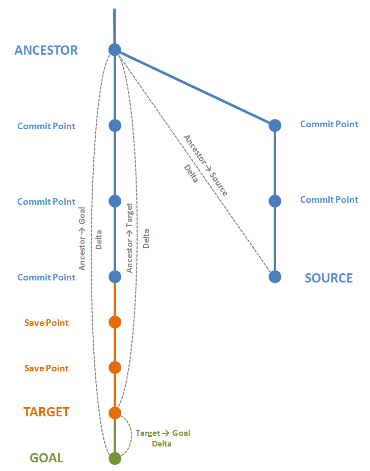
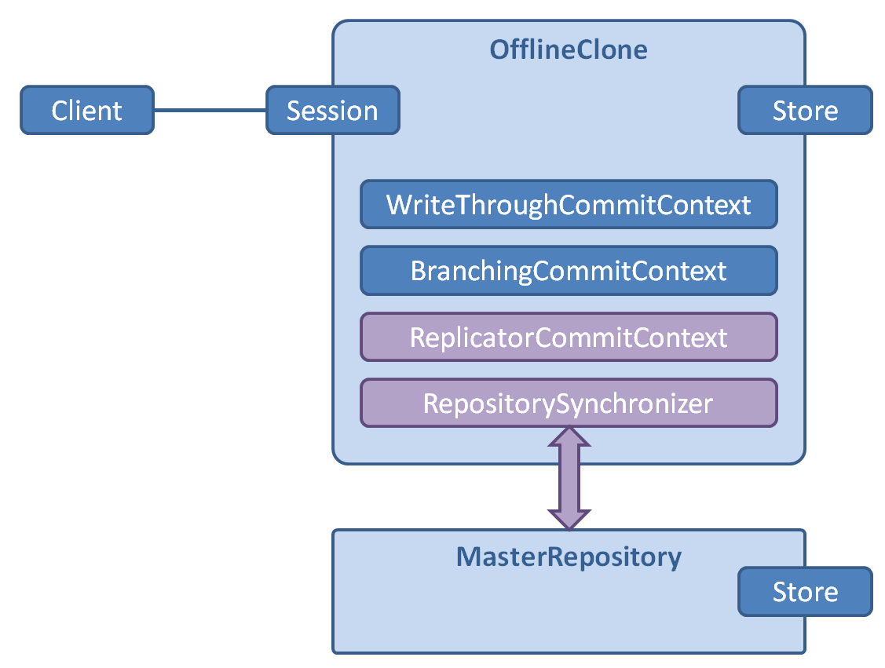

This document elaborates on the new and noteworthy enhancements in CDO 3.0.
Alternatively you can query Bugzilla directly to list
Branches form an explicit, navigable tree in CDO. It is managed by a session's CDOBranchManager, which also emits CDOBranchCreatedEvent for local and remote branch creation.
CDOBranch mainBranch = session.getBranchManager().getMainBranch();
CDOBranch team1Branch = mainBranch.createBranch("team1", timeStamp);
CDOTransaction transaction = session.openTransaction(team1Branch);
CDOView view = session.openView(team1Branch, team1Branch.getBase().getTimeStamp());
view.setBranchPoint(mainBranch.getHead());
Merging is also supported through the new merge(CDOBranchPoint source, CDOMerger merger) method in CDOTransaction. There are several default implementations of the CDOMerger interface provided. An interactive merger will be provided soon.

See bugzilla 270716.
You need to setup a normal repository as the master. Then you setup a second one via CDOServerUtil.createOfflineClone(String, IStore, Map<String, String>, IRepositorySynchronizer). Depending on the configuration of the synchronizer that you have to pass in there are certain restrictions on the store type of the clone repo. The clone is a repository by itself and can be embedded it into a client or made available via TCP transport to many clients. So, it can also be used the clone like a "group server" to serve a subset of the overall clients. That speeds up reads but slows down writes a little bit, as commits are "write-through".

For the clone creation you need a repository synchronizer. Use CDOServerUtil.createRepositorySynchronizer(CDOSessionConfigurationFactory). The synchronizer maintains a session to the master and tries to re-establish that session if the connection breaks down. See: IRepositorySynchronizer.setRetryInterval(int)
A clone repository has a state, one of OFFLINE, SYNCING, ONLINE. Reads are always served from the clone. commits are write-through if the clone is ONLINE. If the clone is not ONLINE, a commit from a client will create a new "local" branch (or offline branch) on the fly. Your client app will always have to check the CDOCommitInfo that is returned from tx.commit(). The branch in the info can be different from the branch of the local tx. In that case it usually makes sense to switch the local tx to the newly created offline branch and adjust the UI accordingly. You will also have to persist that branch info locally, so that you can use that branch after client restarts.
After an OFFLINE phase of the clone repo the synchronizer enters an intermediary SYNCING state and fetches new changesets. After syncing everything the clone transitions back to ONLINE. now your app can merge up from the offline branch and commit the result to the master (write-through).
There are 2 different replication mechanisms in the synchronizer:
See bugzilla 256936.
Legacy models from a CDO perspective are those that have not been regenerated to support all CDO features natively. These models are now supported by CDO, although they do not support lazy loading and unloading of their instances. The legacy mode has to be enabled explicitely for new transactions/views:
// Enable legacy support from now on for all views that will be opened by this thread
CDOUtil.setLegacyModeDefault(true);
CDOView view = session.openView();
System.out.println("Legacy model support: " + view.isLegacyModeEnabled());
See bugzilla 247226.
Sometimes you want to use transient/persistent modifiers for particular structural features in CDO repositories that differ from the normal (XML) behaviour. The following annotation constants have been added to EMFUtil:
public static final String CDO_ANNOTATION_SOURCE = "http://www.eclipse.org/emf/CDO";
public static final String CDO_ANNOTATION_KEY_PERSISTENT = "persistent";
Their literals can be used in an Ecore model definition as follows:
<eClassifiers xsi:type="ecore:EClass" name="Product1">
<eStructuralFeatures xsi:type="ecore:EAttribute" name="description" eType="..." transient="true">
<eAnnotations source="http://www.eclipse.org/emf/CDO">
<details key="persistent" value="true"/>
</eAnnotations>
</eStructuralFeatures>
</eClassifiers>
See bugzilla 290990.
A getLastUpdateTime() method has been added to CDOSession. With the new waitForUpdate() methods in CDOSession you can, e.g., synchronize local views and transactions.
final CDOCommitInfo commitInfo = transaction.commit();
new Thread()
{
@Override
public void run()
{
session.waitForUpdate(commitInfo.getTimeStamp());
}
}.start();
See bugzilla 283947.
A session can now be configured to receive full revision deltas instead of just invalidation keys.
session.options().setPassiveUpdateMode(PassiveUpdateMode.CHANGES);
session.addListener(new IListener()
{
public void notifyEvent(IEvent event)
{
if (event instanceof CDOSessionInvalidationEvent)
{
CDOSessionInvalidationEvent e = (CDOSessionInvalidationEvent)event;
for (CDORevisionKey key : e.getChangedObjects())
{
CDORevisionDelta revisionDelta = (CDORevisionDelta)key;
System.out.println("Feature deltas: " + revisionDelta.getFeatureDeltas());
}
}
}
});
A session can now be configured to receive full new revisions instead of only keys.
session.options().setPassiveUpdateMode(PassiveUpdateMode.ADDITIONS);
session.addListener(new IListener()
{
public void notifyEvent(IEvent event)
{
if (event instanceof CDOSessionInvalidationEvent)
{
CDOSessionInvalidationEvent e = (CDOSessionInvalidationEvent)event;
for (CDOIDAndVersion key : e.getNewObjects())
{
CDORevision revision = (CDORevision)key;
System.out.println("Container of new object: " + revision.data().getContainerID());
}
}
}
});
PassiveUpdateMode.ADDITIONS includes PassiveUpdateMode.CHANGES.
The default option is PassiveUpdateMode.INVALIDATIONS.
Note that the CDOSessionInvalidationEvent interface extends CDOCommitInfo.
See bugzilla 294528.
Formerly objects that were first being detached from a transaction and then being reattached to the same transaction were assigned a new identitiy. That was annoying in use cases like drag and drop in a user interface. Now the transaction remembers identities of detached objects and reassigns them if needed.
See bugzilla 294528.
The new push transactions support commits to local files. Later the changes can be read from this local file and pushed to a repository.
File file = new File("changes.bin");
file.delete();
// Open a new transaction and wrap it in a push transaction
CDOPushTransaction transaction1 = new CDOPushTransaction(session.openTransaction(), file);
// Commit to local file
transaction1.commit();
transaction1.close();
// Open a new push transaction and load changes from local file
CDOPushTransaction transaction2 = new CDOPushTransaction(session.openTransaction(), file);
// Push changes to the repository
transaction2.push();
transaction2.close();
See bugzilla 297967.
The method exportChanges() has been added to CDOTransaction.
OutputStream fos = new FileOutputStream("changes.bin");
try
{
CDOSavepoint[] savepoints = transaction1.exportChanges(fos);
}
finally
{
IOUtil.close(fos);
}
The method importChanges() has been added to CDOTransaction.
InputStream fis = new FileInputStream("changes.bin");
try
{
CDOSavepoint[] savepoints = transaction2.importChanges(fis, true);
}
finally
{
IOUtil.close(fis);
}
See bugzilla 298334.
The concept of successful commits has been made explicit and queriable through CDOCommitInfoManager.
CDOBranchManager branchManager = session.getBranchManager();
CDOBranch mainBranch = branchManager.getMainBranch();
CDOCommitInfoManager commitInfoManager = session.getCommitInfoManager();
commitInfoManager.getCommitInfos(
mainBranch,
CDOBranchPoint.UNSPECIFIED_DATE,
CDOBranchPoint.UNSPECIFIED_DATE,
new CDOCommitInfoHandler()
{
public void handleCommitInfo(CDOCommitInfo commitInfo)
{
System.out.println("Commit comment: " + commitInfo.getComment());
}
});
See bugzilla 256649.
Several small enhancements have been applied to query and query result transport:
Provides a way of being notified about state changes of objects.
CDOView view = session.openView();
view.addObjectHandler(new CDOObjectHandler()
{
public void objectStateChanged(CDOView view, CDOObject object, CDOState oldState, CDOState newState)
{
System.out.println("Object transitioned to " + newState);
}
});
See bugzilla 292733.
Provides a way of being notified about target changes of views.
CDOView view = session.openView();
view.addListener(new IListener()
{
public void notifyEvent(IEvent event)
{
if (event instanceof CDOViewTargetChangedEvent)
{
CDOViewTargetChangedEvent e = (CDOViewTargetChangedEvent)event;
System.out.println("A new view target has been set: " + e.getBranchPoint());
}
}
});
view.setBranch(view.getSession().getBranchManager().getMainBranch());
view.setTimeStamp(CDOBranchPoint.UNSPECIFIED_DATE);
view.setBranchPoint(anotherView);
See bugzilla 289880.
Since adapter notification can cause side effects and the order of the notifications is unpredictable a new event is emitted by views to indicate the end of a notification series.
CDOView view = session.openView();
view.addListener(new IListener()
{
public void notifyEvent(IEvent event)
{
if (event instanceof CDOViewAdaptersNotifiedEvent)
{
CDOViewAdaptersNotifiedEvent e = (CDOViewAdaptersNotifiedEvent)event;
System.out.println("All adapters have been notified about commit " + e.getTimeStamp());
}
}
});
See bugzilla 289880.
Provides a way to handle transactions after they have been committed to the backend store.
IRepository repository = CDOServerUtil.createRepository("myrepo", store, props);
repository.addHandler(new IRepository.WriteAccessHandler()
{
public void handleTransactionBeforeCommitting(ITransaction transaction,
IStoreAccessor.CommitContext commitContext, OMMonitor monitor) throws RuntimeException
{
System.out.println("About to commit " + transaction);
}
public void handleTransactionAfterCommitted(ITransaction transaction,
IStoreAccessor.CommitContext commitContext, OMMonitor monitor)
{
System.out.println("Committed " + transaction);
}
});
See bugzilla 304959.
An isRemote() method has been added to CDOSessionInvalidationEvent.
session.addListener(new IListener()
{
public void notifyEvent(IEvent event)
{
if (event instanceof CDOSessionInvalidationEvent)
{
CDOSessionInvalidationEvent e = (CDOSessionInvalidationEvent)event;
if (e.isRemote())
{
System.out.println("A remote session has committed a transaction: " + e.getUserID());
}
}
}
});
See bugzilla 281566.
The default mapping strategy for the audit-aware DBStore usually writes value lists (for many-valued
features) completely for each revision. The new mapping strategy type horizontalAuditWithRanges
uses a different approch: each list value is associated with a start and end revision indicating its
lifetime. For applications in which lists are mostly extended by adding elements to the end of the lists,
using this mapping strategy can lead to increased performance.
However, in cases where lists are rearranged, of if list entries in the middle of the list are removed regularly, the default mapping should still be the better choice. Also, as of now, this strategy can not be used together with the new branching feature.
To activate the alternative mapping strategy, use the following configuration setting in the server's configuration.xml:
<store type="db">
<mappingStrategy type="horizontalAuditWithRanges">
<property name="qualifiedNames" value="false"/>
</mappingStrategy>
...
</store>
See bugzilla 296440.
The following new annotations are now recognized by the DBStore:
public enum DBAnnotation
{
TABLE_MAPPING("tableMapping"),
TABLE_NAME("tableName"),
COLUMN_NAME("columnName"),
COLUMN_TYPE("columnType"),
COLUMN_LENGTH("columnLength");
public final static String SOURCE_URI = "http://www.eclipse.org/CDO/DBStore";
}
In CDO a structural feature can have multiple annotation with the same source, like:
<eStructuralFeatures xsi:type="ecore:EAttribute" name="value"
eType="ecore:EDataType http://www.eclipse.org/emf/2002/Ecore#//EString">
<eAnnotations source="http://www.eclipse.org/CDO/DBStore">
<details key="columnName" value="HOLY"/>
</eAnnotations>
<eAnnotations source="http://www.eclipse.org/CDO/DBStore">
<details key="columnType" value="CLOB"/>
</eAnnotations>
</eStructuralFeatures>
See bugzillas 284701, 282976, 284680.
External references are created if an object managed by a transaction refers to an object that is either not managed by a view or is managed by a view to a different repository. Internally such references are represented by instances of CDOIDExternal and their CDOID.isExternal() method always returns true. In the database they appear as negative long values, indicating that the URI of the target object can be looked up in a separate table.
See bugzilla 249610.
If your model contains feature maps you can now use the DBStore to persist them.
See bugzilla 254455.
For EStructuralFeatures which have the unsettable property set to true,
an additional boolean column is created in the corresponding database table which indicates if
the feature is set. If an unset feature is stored, false is stored in the additional
column and the feature's default value is stored in the feature's value field.
See bugzilla 284110.
If you are aware of the structure and meaning of a DBStore created mapping schema you can now use SQL to query the backend efficiently. Note that might need to consider version and/or branch information to prevent duplicate results from being returned.
CDOQuery query = view.createQuery("sql", "SELECT CDO_ID FROM CUSTOMER ORDER BY NAME");
List<Customer> customers = query.getResult(Customer.class);
See bugzilla 248933.
The documentation of the Hibernate store has been completed and is available on the CDO wiki. The documentation includes a quick start and tutorial, an overview article on the architecture, download and install, model relational mapping specifics and details on the HQL support.
To ease the learning curve and facilitate starting with the Hibernate store 2 example development projects have been created and are downloadable from cvs. The example projects show how to setup the server side and shows examples of querying and updating on the client using the CDO-Hibernate store.
The Hibernate store now supports HQL on the client. Practically the complete HQL syntax is supported:
In addition asynchronous queries are supported.
For more information on the HQL support see this wiki page.
The CDO Hibernate store supports the Teneo extension mechanism. This allows you to replace core parts of Teneo's mapping logic with your own implementation. See here for more information.
By using special the special @External annotation it is now possible to persist references to objects which are not persisted directly in the CDO Hibernate store. See this Teneo documentation for more information.
Feature maps are now supported out-of-the-box. See this Teneo documentation for a general discussion on featuremap support, the CDO Hibernate store supports a similar mechanism.